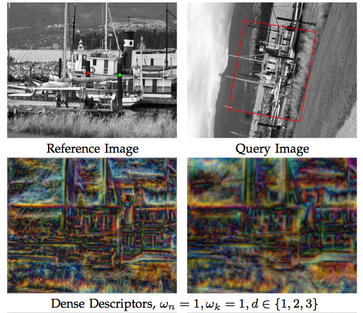
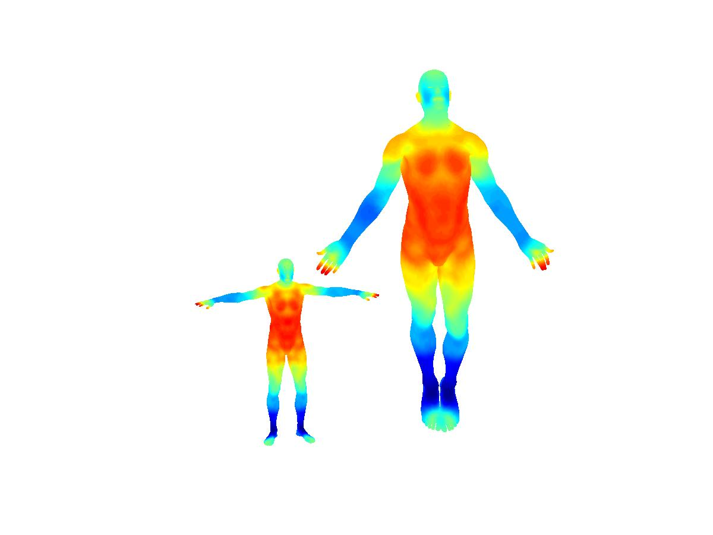
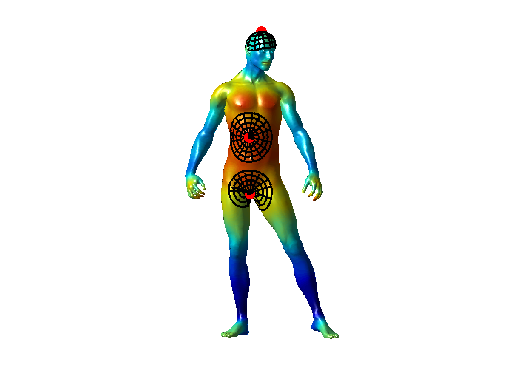

Dense Descriptors for Images and Surfaces
|

SID - CVPR 2008/ TR 2012 sid.zip Link |

SI-HKS - CVPR 2010 sihks.zip |
 ISC - CVPR 2012 isc.zip (includes SI-HKS) |
Brief description:
SID (Scale-Invariant Descriptor) is a densely computable, scale- and rotation- invariant descriptor. We use a log-polar grid around every point to turn rotation/scalings into translation, and then use the Fourier Transform Modulus to achieve invariance.
SI-HKS (Scale-Invariant Heat Kernel Signatures) extract scale-invariant shape signatures by exploiting the fact that surface scaling amounts to multiplication and scaling of a properly sampled HKS descriptor. We apply the FTM trick on HKS to achieve invariance to scale changes.
ISC (Intrinsic Shape Context) constructs a net-like grid around every surface point by shooting outwards and tracking geodesics. This allows us to build a meta-descriptor on top of HKS/SI-HKS that takes neighborhood into account, while being invariant to surface isometries.
Relevant publications (please cite if you use the related code):
E. Trulls, I. Kokkinos, A. Sanfeliu, and F. Moreno
Dense Segmentation-Aware Descriptors
Proc.
IEEE Conf. on Computer Vision and Pattern Recognition (CVPR), 2013.
[pdf]
I. Kokkinos, M. Bronstein, R. Littman and A. Bronstein
Intrinsic Shape Context Descriptors for Deformable Shapes
Proc.
IEEE Conf. on Computer Vision and Pattern Recognition (CVPR), 2012.
[pdf]
I. Kokkinos, M. Bronstein and A. Yuille
Dense Scale-Invariant Descriptors for Images and Surfaces
Technical report 2012
[pdf]
M. Bronstein and I. Kokkinos,
Scale-invariant heat kernel signatures for non-rigid shape recognition,
Proc.
IEEE Conf. on Computer Vision and Pattern Recognition (CVPR), 2010.
[pdf]
I. Kokkinos and A. Yuille,
Scale Invariance without Scale Selection,
Proc.
IEEE Conf. on Computer Vision and Pattern Recognition (CVPR), 2008.
[pdf]
[bib]
These projects have been partially supported by Agence Nationale de Recherche (ANR) under Grant ANR-10-JCJC-0205.